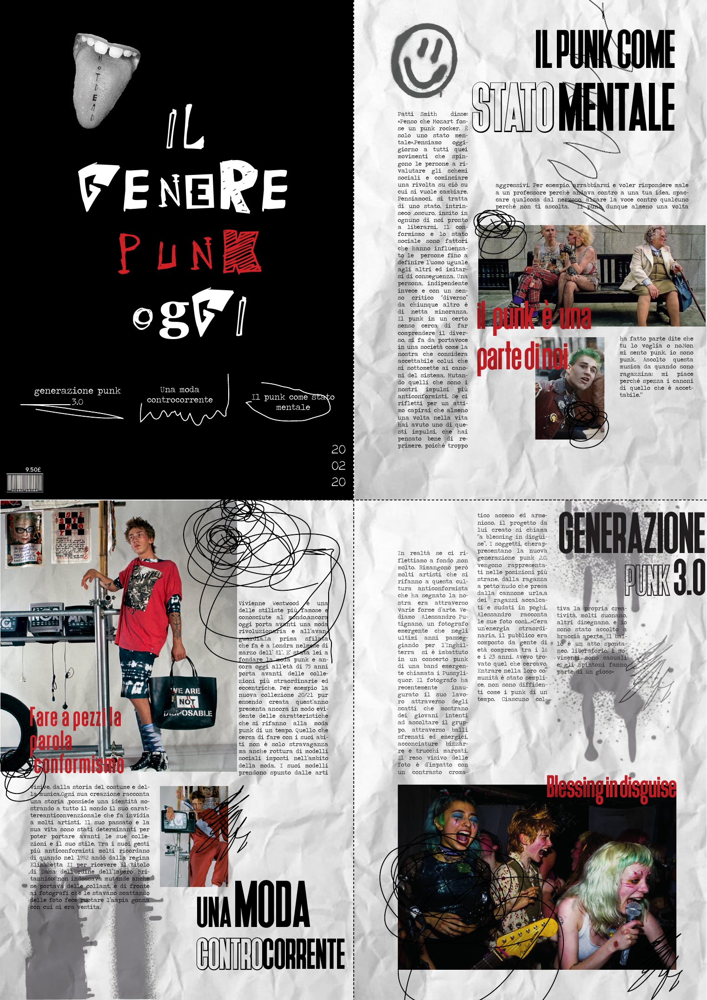
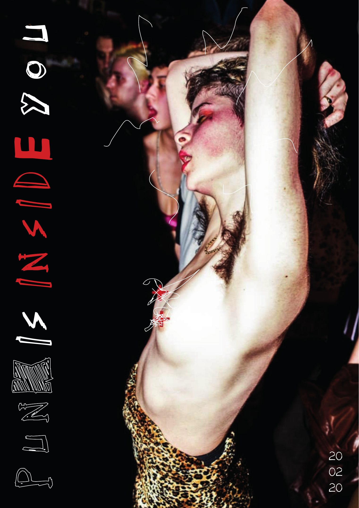

Editoriale · poster A3 piegato
Punk is inside you
Un poster-rivista sul punk di oggi: “Il genere punk oggi”. Piegato è una copertina; aperto, quattro pagine di articoli sul punk come stato mentale, una moda controcorrente e la generazione punk 3.0; girato, un poster a tutta pagina.
Clicca il poster per aprirlo, poi clicca ancora per girarlo.
I due lati

